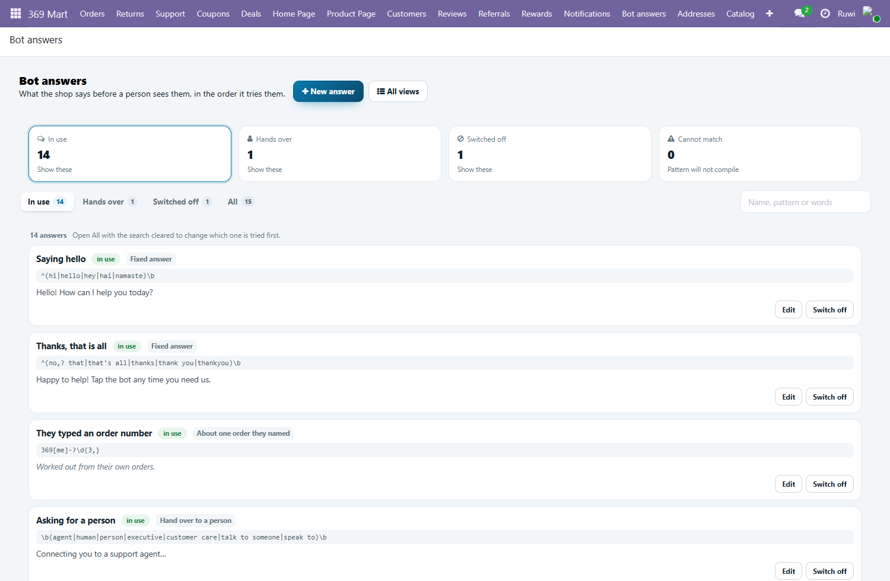
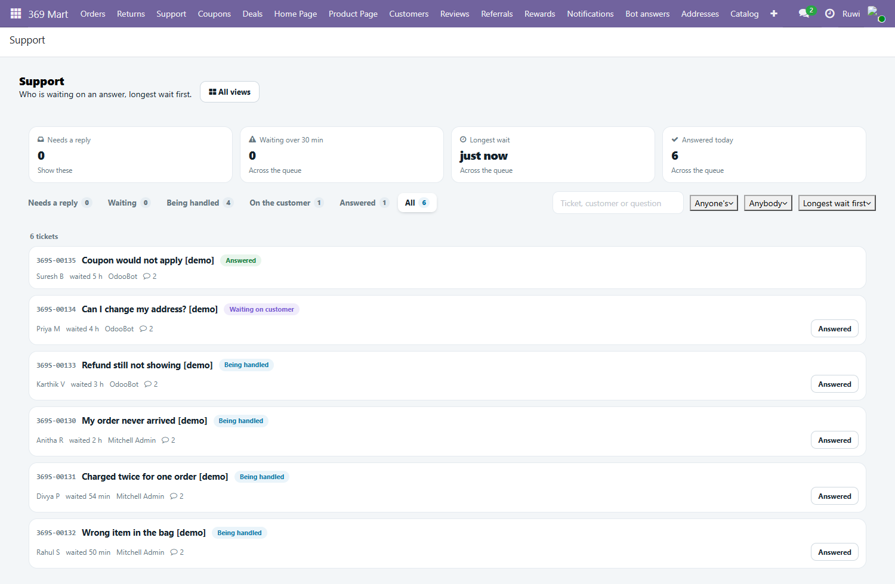
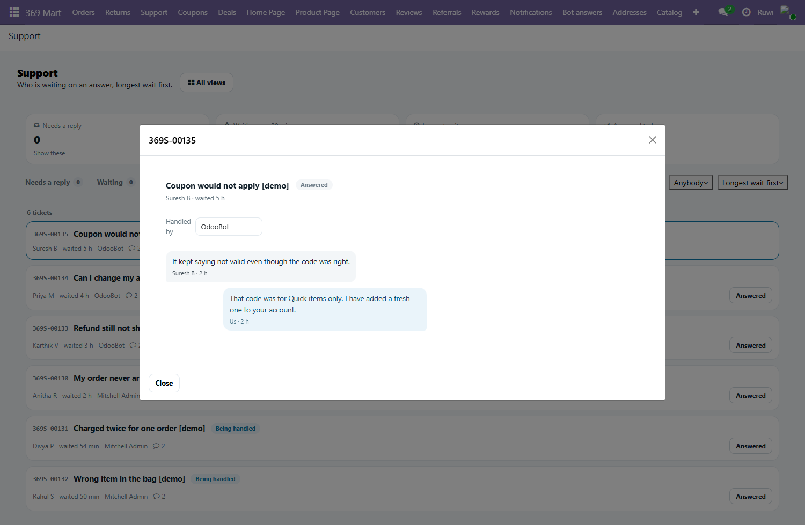
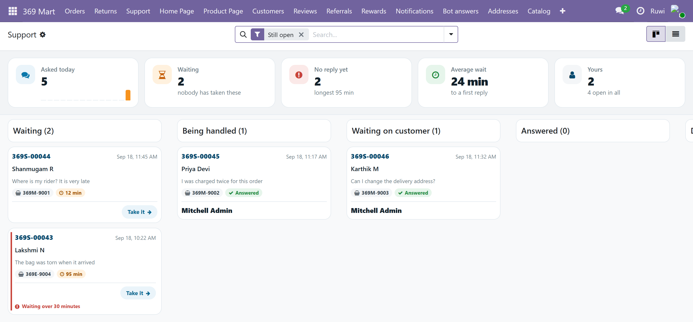
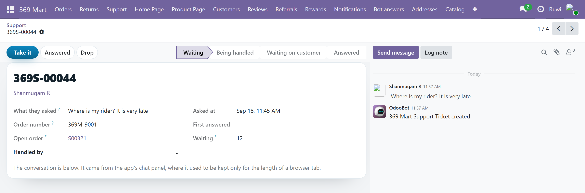
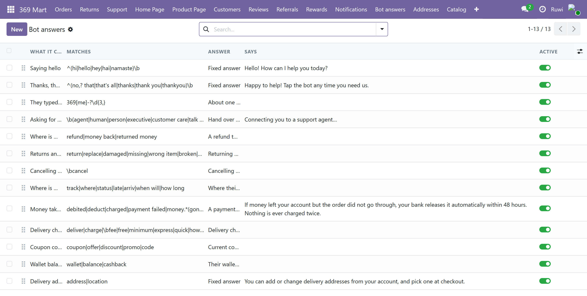

369 Mart Support runs the help chat in the shop app and on the website. A bot called Mitra answers first, using a list of bot answers your staff can edit. Answers about delivery charges, coupon codes, orders and the 369 Wallet are looked up live, so the bot always says what the shop really charges.
When a customer asks for a person, a real ticket opens with the whole chat on it, and your team answers from the Support desk. A one- or two-star rating also opens a ticket, so an unhappy customer is always followed up.
| Word | What it means |
|---|---|
| Bot answer | One topic the bot knows: the words it listens for and what it says back. |
| Matches | The words a bot answer listens for. refund|money back means "refund" or "money back". |
| Ticket | One customer's request for a person, with the chat on it. Numbered like 369S-00044. |
| Hands over | A bot answer that passes the customer to your team and opens a ticket. |
| Handled by | The staff member looking after a ticket. |
| Suggestions | Small buttons under a bot reply that the customer can tap instead of typing. |
Part 1 – Setting Up covers the bot answers. Part 2 – Everyday Use covers the Support desk, low-rating tickets and WhatsApp order updates. Part 3 – Keeping It Secure & In Order covers the full lists, who can do what, and privacy.
Done by a manager or a senior Salesperson. The installed answers are a good start; change them when the shop's wording changes.
Open 369 Mart from the main menu:
All four need Salesperson rights.
Open Store → Bot answers. The tiles count answers In use, those that Hand over to a person, those Switched off, and Cannot match (an answer whose Matches line has a typing mistake, so it never fires).

The bot reads the list from the top and uses the first answer that matches. Use the up and down arrows on each row to change the order. The arrows only show on the All tab with the search box empty.
Press New answer, or Edit on a row. Fill in:
Press Save. If the Matches line has a mistake, the backend says so and does not save it.
| Kind | What the bot answers |
|---|---|
| Fixed answer | Exactly the words in Says. |
| About one order they named | Where that order is, its total and how it was paid. |
| Where their orders are | Their orders on the way, with tracking buttons. |
| A refund they are waiting for | Their cancelled order, refund timing and wallet balance. |
| Cancelling an order | Whether their latest order can still be cancelled. |
| Returning something | How many days returns stay open, and a button to start one. |
| A payment problem | What happens when money left the bank but no order was made. |
| Delivery charges and minimums | The real delivery fees, free-delivery limits and minimum orders. |
| Current coupon codes | Up to four coupon codes that work today. |
| Their wallet balance | Their 369 Wallet balance. |
| Hand over to a person | Passes them to the team and opens a ticket. |
The Support desk is where the team works through tickets during the day.
The chat opens with Hello! How can I help you today? and six topics: Track my order, Refund status, Cancel an order, Payment issue, Delivery charges and Talk to an agent. If nothing matches, the bot offers the topics again or a person.
Open Sales → Support. The desk opens on Needs a reply: open tickets nobody has answered yet, longest wait first. The tiles show Needs a reply, Waiting over 30 min, Longest wait and Answered today. The screen refreshes itself every 30 seconds.

Use the tabs (Waiting, Being handled, On the customer, Answered, All), the search box, Anyone's / Mine only, a Handled by name, and Longest wait first / Newest first.
Click a ticket to open it. You see the question, the customer, the order it is about, the whole chat, and Handled by.

When a customer gives one or two stars to an order or in a product review, a ticket opens for them automatically (or their open ticket is used). The rating and their words are posted on it, e.g. Rated 1 of 5 - review of …, with the order when there is one. On the Reviews desk, such a review shows a Ticket label with the ticket number. An order's tickets also show in the order's details, and a customer's tickets on their profile in the staff console.
The customer can get a WhatsApp message at each order step: confirmed, packed, shipped, out for delivery, delivered and cancelled. The confirmed, packed, shipped and out-for-delivery messages carry a tracking link. A message is sent only when all of these are true:
All views on the Support desk opens the tickets as a board with a column per status, filtered to Still open. The tiles show Asked today, Waiting, No reply yet, Average wait and Yours. Late cards say Waiting over 30 minutes.

A ticket's full form keeps the record: What they asked, Order number, Asked at, First answered, Waiting (minutes) and Handled by, with the chat and every status change on the right.

Bot answers (all views) shows every answer in one list, which is handy for checking the order at a glance or exporting.

| Role | What they can do |
|---|---|
| Internal user | Read only. The menus are hidden. |
| Salesperson | The Support desk and the Bot answers desk: answer, take, close and drop tickets; write, reorder and switch off answers. Cannot delete. |
| Website designer (Manager) | Tickets in the staff console. |
| Administrator (Settings) (Owner) | Everything, including deleting tickets and answers. |
The bot only reads the signed-in customer's own orders and wallet, and a customer can only see their own ticket. The bot never says an order's delivery code in the chat. Staff notes logged on a ticket never reach the customer.
| State | Meaning | How to change it |
|---|---|---|
| Waiting | New. Nobody has taken it or replied. | Take it, or send a reply. |
| Being handled | A staff member has it. | Waiting on them, Answered or Drop it. |
| Waiting on customer (On the customer) | You asked the customer something. | Answered or Drop it. |
| Answered | Settled and closed. | Final. A new request opens a new ticket. |
| Dropped | Closed without an answer; the customer was not told. | Final. |
| What you see | What to do |
|---|---|
| The bot gives the wrong answer to a question | A broader answer higher up matched first. On Bot answers, open All with an empty search and move the right answer up. |
| A bot answer never fires | Check the Cannot match tile, and that the answer is not Switched off. Check its Matches words. |
| Saving an answer fails | The Matches line has a typing mistake. Follow the style of an installed answer. |
| The bot quotes old delivery charges or coupons | It reads the shop's real delivery and coupon settings; correct them there. |
| There is no reply box on a ticket | The ticket is Answered or Dropped. The customer can ask for a person again to open a new one. |
| Customers get no WhatsApp updates | No WhatsApp gateway is installed, or the customer did not tick WhatsApp updates at checkout, switched WhatsApp off, or has no phone number. |
| A guest says the bot keeps asking them to sign in | Answers about their own orders, wallet or a person need them signed in. |